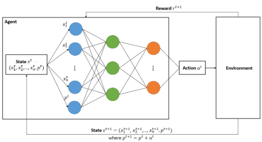
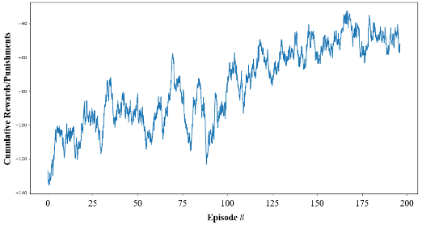

Incident Duration Sequential Predictions with Reinforcement Learning
Incident duration prediction is crucial in Transportation System Management and Operations (TSMO) regardless of whether the information is directly reported to travelers or utilized in devising traffic control measures. Sequential prediction is the process by which an incident duration is predicted at its inception, and potential follow-up predictions or revisions to earlier predictions are made after that. One circumstance that necessitates sequential predictions but has never been addressed is that the incident hasn’t been cleared despite the elapsed time specified in the duration estimation. We proposed a methodology for training a Reinforcement Learning (RL) agent to produce sequential predictions under this circumstance.

The figure above depicts the action-reward feedback loop for this problem which used DQNs to train the RL agent. DQNs use neural networks to approximate the Q values with the state as input and the Q values for all possible actions as outputs. The loop proceeds as follows:
Step 1: The agent is initially with state s0=(x10,x20,…,xn0,p0 ), where p0=0, i.e., the current prediction is 0, since the agent hasn’t started to predict yet. Following the agent’s action a0, the agent receives reward r1 and the agent’s state changes to s1=(x11,x21,…,xn1,p1 ), where p1=p0+a0, i.e., the current prediction equals to, the previous prediction plus the adjustment made on it.
Step 2: Without loss of generality, the agent at time t possesses st=(x1t,x2t,…,xnt,pt ). Following the agent’s action at, the agent obtains the reward rt+1 and the agent’s state transits to st+1=(x1t+1,x2t+1,…,xnt+1,pt+1 ), where pt+1=pt+at.
Step 3: The loop ends when the incident is cleared.

Average cumulative rewards/punishments in training
We applied the methodology to the Houston TranStar incidents data and trained an RL agent, which can produce a new prediction when an earlier one becomes invalid. For 62.3% of incident occurrences, the agent functions as a one-time prediction method. However, when a one-time prediction has a considerable error, additional p redictions can be generated to make up for the one-time prediction’s shortcomings. The final prediction in each sequence had a Mean Absolute Error (MAE) of 11.4 minutes, 15 minutes less than the smallest MAE of 26.1 minutes that we obtained using one-time prediction techniques on the same dataset. It is the first piece of work that produces sequential predictions under this circumstance. The proposed methodology facilitates the Traffic Incident Management (TIM) system to provide travelers with updated information to make informed decisions.